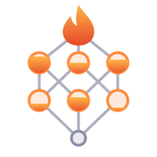

All three use the same idea: a lower and an upper bound, [Bel, Pl], drawn as a solid core inside a lighter outline.
The solid inner flame is belief, the outlined outer flame is plausibility, and the gap between them is the imprecision the library keeps track of. It reads as a torch, works at 16 px, and needs no explanation to look good.

The Hasse diagram of 2Θ, which is literally the dense tensor layout. Each event is filled to its Bel inside a Pl ring, with a flame at Θ. The most "mathematical" option, but it turns to mush below 32 px.
A flame inside interval brackets [ ]. Bold and very legible as a favicon, but it only says "interval", not "lower vs. upper".